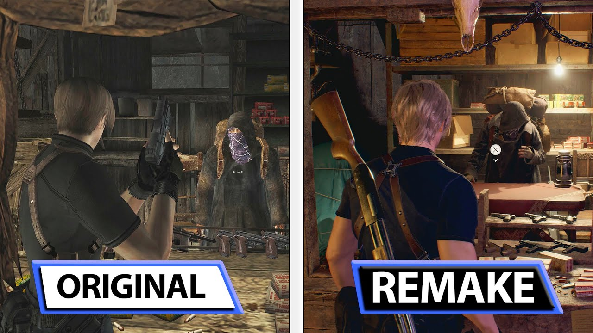
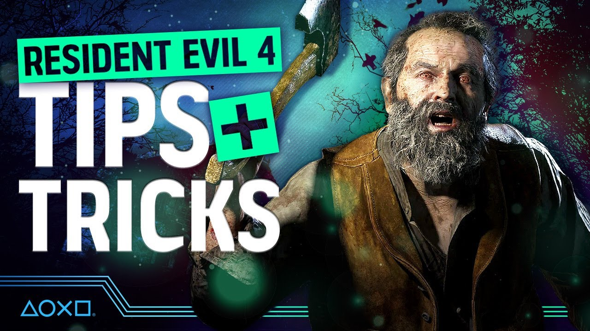

The History of Resident Evil 4
Resident Evil 4 was first released in 2005 for the Nintendo GameCube and later ported to other platforms. It was a major departure from the fixed-camera angles of previous titles, introducing the over-the-shoulder perspective, which became a staple of the series. The game follows Leon S. Kennedy, a government agent, on a mission to rescue the President's daughter from a mysterious cult in rural Spain.
Gameplay and Mechanics
Resident Evil 4 Remake retains the core gameplay mechanics of the original, including resource management, puzzle-solving, and intense combat. Players will face hordes of infected villagers and terrifying creatures, requiring precise aiming and quick reflexes to survive. The game also introduces modern enhancements to the gameplay, making it accessible to both new players and fans of the original.
Best Tips and Strategies for Survival
Mastering the gameplay in Resident Evil 4 Remake is essential for survival. Here are some tips and strategies to help you overcome the challenges that lie ahead:
- Conserve ammo and use melee attacks wisely.
- Explore every area thoroughly for valuable resources.
- Use herbs and first aid sprays to heal wounds.
- Take advantage of environmental traps to eliminate enemies.
- Upgrade weapons to increase their firepower and capacity.